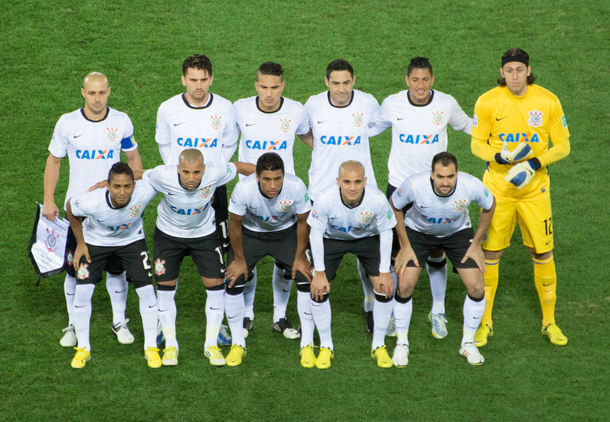

Após conquistar a Libertadores, o Corinthians ganhou o direito de disputar o FIFA Club World Cup 2012, realizado no Japão. O torneio reúne os campeões continentais de todo o mundo, e o Corinthians chegou muito motivado para buscar o segundo título mundial de sua história. Na semifinal, o time brasileiro enfrentou o Al‑Ahly SC do Egito e venceu por 1 a 0, com gol de Paolo Guerrero. A vitória garantiu a classificação para a grande final contra o forte time do Chelsea F.C., campeão da Europa naquele ano.
A decisão aconteceu no dia 16 de dezembro de 2012. Em uma partida muito disputada, o Corinthians mostrou grande organização tática e contou com uma atuação histórica do goleiro Cássio, que fez defesas importantes durante o jogo. No segundo tempo, Paolo Guerrero marcou de cabeça o gol da vitória por 1 a 0.
Com esse resultado, o Corinthians conquistou seu segundo título mundial, diante de milhares de torcedores que viajaram ao Japão para apoiar o time. A vitória ficou marcada como um dos momentos mais emocionantes da história do clube e reforçou a fama da torcida corinthiana como uma das mais apaixonadas do futebol.
